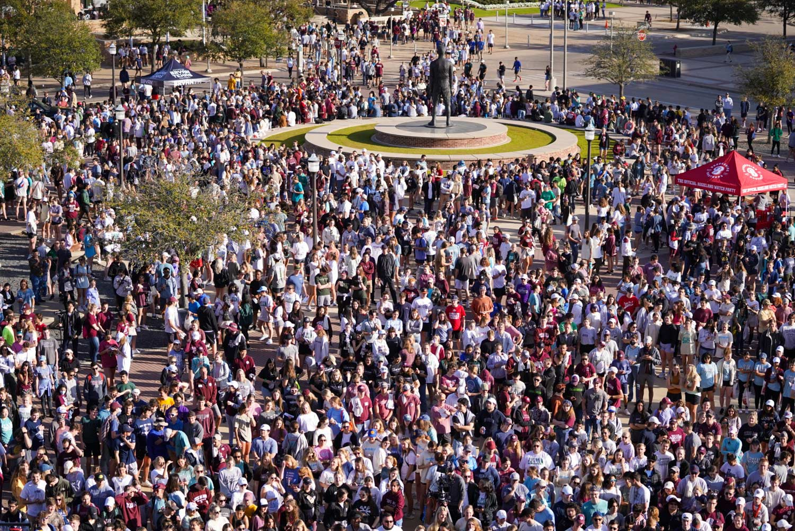

Over the years, I have volunteered to teach the younger generation, under Caterpillar Ministries, specifically in disadvantaged communities. I dedicate time to teaching to help introduce them to technology and problem-solving skills while polishing their basic knowledge.
Mentorship and education are deeply important to me, as they help spark curiosity and create opportunities for the next generation. These children might have not had the same opportunities I did, but with a little help, I believe they would grow even better than I did.

I actively participate in large-scale community service projects such as Texas A&M's Big Event, where students unite to give back to the surrounding Bryan-College Station community.
Projects like these that give back to the community or help clean up the environment are essential and represent the good will in humanity.